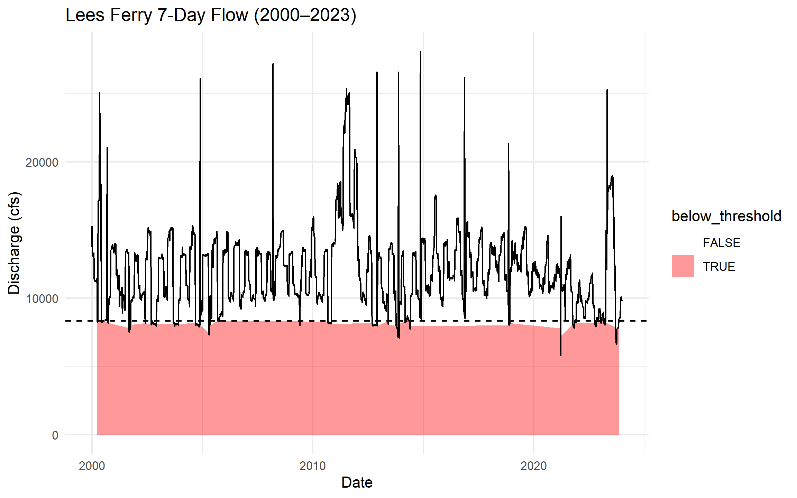
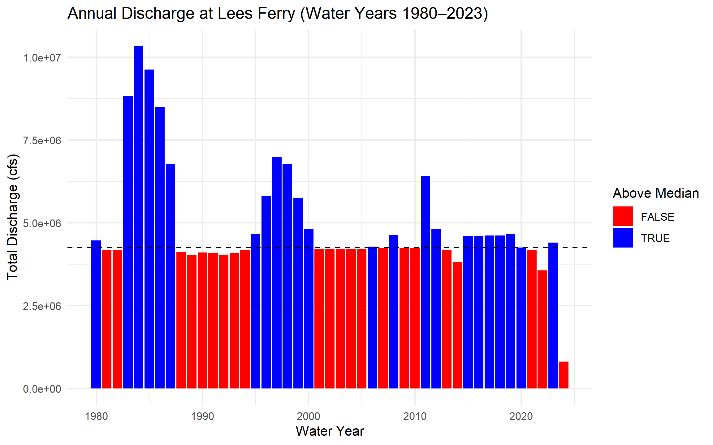
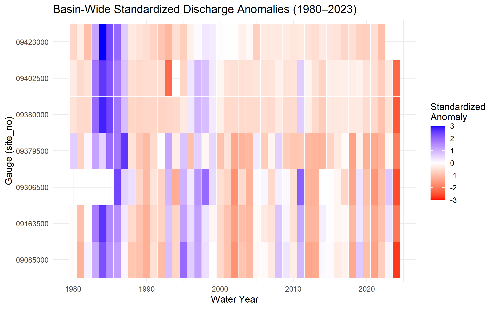
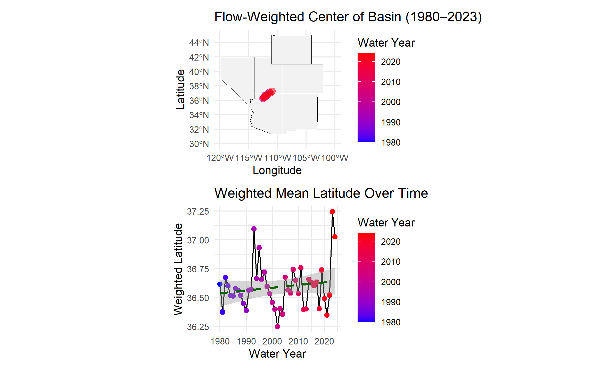
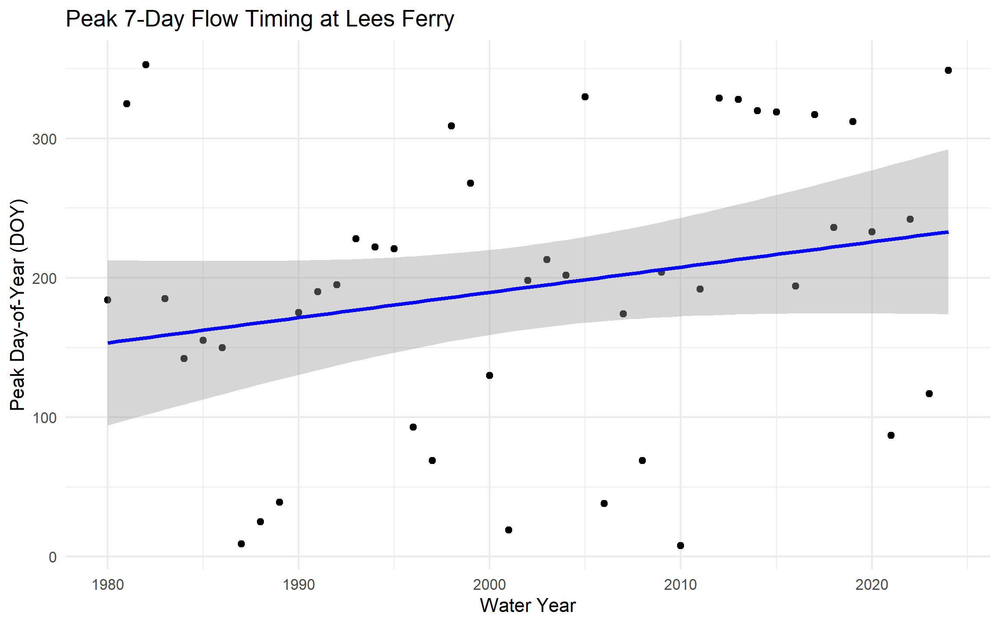
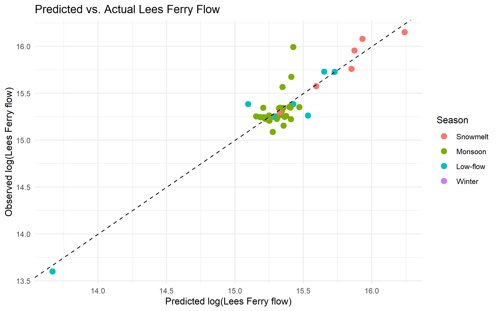
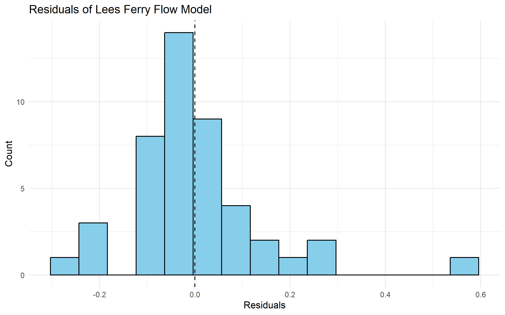

Lab 1: Data Science Tools
Exploring Streamflow Across the Colorado River Basin
include-before-body: “../slides/header.html” include-after-body: “../slides/footer-annotations.html”
In January 2023, the federal government announced the first-ever Tier 3 shortage on the Colorado River — triggering mandatory cuts to Arizona, Nevada, and Mexico. Those cuts were calculated from streamflow records like the ones you are about to pull.
The Colorado River Basin supplies drinking water to 40 million people across 7 US states, irrigates 5 million acres of farmland, and is governed by one of the oldest and most contested water rights agreements in American history — the Colorado River Compact of 1922. Understanding how streamflow varies across this system is not an academic exercise. It is the daily work of water managers, federal agencies, tribal water rights holders, and scientists navigating a river under compounding stress from drought, overallocation, and climate change.
In this lab you will work with real streamflow records pulled directly from the USGS National Water Information System (NWIS) — the same federal system water managers query every morning. You will build a complete analytical pipeline: from raw API call to normalized comparisons, threshold detection, basin-wide trend visualization, and a predictive model of the Compact’s key accounting point.
Libraries
Install and load the following packages. If any are missing, run install.packages("packagename") first:
Code
if (!requireNamespace("pacman", quietly = TRUE)) install.packages("pacman")
pacman::p_load(
tidyverse,
dataRetrieval,
zoo,
patchwork,
flextable,
lubridate,
broom,
tibble
)Data
We will use the dataRetrieval package — developed and maintained by the USGS — to pull 44 years of daily mean discharge from 7 long-record gauges spanning the Colorado River’s main stem and major tributaries.
The USGS parameter code for discharge is 00060 (cubic feet per second). The statistic code 00003 is the daily mean value. Under the hood, dataRetrieval constructs and queries the same REST API URL we explored in lecture:
https://waterservices.usgs.gov/nwis/dv/?sites=09380000¶meterCd=00060&statCd=00003The data can be grabbed below!
Code
gauges <- tribble(
~site_no, ~name, ~state,
"09380000", "Colorado R at Lees Ferry", "AZ",
"09163500", "Colorado R near CO-UT border", "CO",
"09085000", "Colorado R at Glenwood Springs","CO",
"09306500", "White R near Watson", "UT",
"09379500", "San Juan R near Bluff", "UT",
"09402500", "Little Colorado R near Cameron","AZ",
"09423000", "Colorado R below Hoover Dam", "NV"
)
raw <- readNWISdv(
siteNumbers = gauges$site_no,
parameterCd = "00060",
startDate = "1980-01-01",
endDate = "2023-12-31"
) |>
renameNWISColumns() |> # renames X_00060_00003 → Flow
left_join(gauges, by = "site_no") |>
select(site_no, name, state, Date, Flow)
glimpse(raw)Rows: 109,425
Columns: 5
$ site_no <chr> "09085000", "09085000", "09085000", "09085000", "09085000", "0…
$ name <chr> "Colorado R at Glenwood Springs", "Colorado R at Glenwood Spri…
$ state <chr> "CO", "CO", "CO", "CO", "CO", "CO", "CO", "CO", "CO", "CO", "C…
$ Date <date> 1980-01-01, 1980-01-02, 1980-01-03, 1980-01-04, 1980-01-05, 1…
$ Flow <dbl> 620, 605, 582, 582, 575, 590, 582, 582, 582, 590, 560, 598, 59…Note: this chunk is cached (cache = TRUE). If you change the data-pull arguments and need fresh data, set cache = FALSE temporarily or delete the _cache/ directory and re-render to force a new download.
TipWhat does
glimpse() tell you?
Before doing anything with a new dataset, always check: Does the row count make sense? Are data types correct (Date should be <date>, Flow should be <dbl>)? Are there obvious NAs or impossible values? For ~7 gauges × 44 years × 365 days you should expect roughly 112,000 rows.
Question 1: Daily Conditions Report
You are a water resources analyst. Each morning you deliver a reproducible snapshot of current conditions to Colorado River Compact stakeholders. The analysis must be re-runnable on any date with a single change — that requires building it around parameter objects rather than hardcoded values.
a. Create a my.date parameter object set to the last day of water year 2023 (September 30, 2023). Ensure it is stored as a proper Date object, not a character string.
Tip
as.Date() converts a character string to a Date. R stores dates internally as days since 1970-01-01, enabling date arithmetic (my.date - 7 = one week earlier) and use in filter() comparisons. Hint: use as.Date() to convert strings to Date objects and confirm with class() before using date arithmetic or filter().
Code
my.date <- as.Date("2023-09-30")
class(my.date)[1] "Date"b. Compute the day-over-day change in discharge for each gauge — how much flow rose or fell compared to the previous day. Store this as a new column called flow_delta. This tells you whether conditions are improving or deteriorating, which is often more actionable than the raw level alone.
Code
#check na values and remove
sum(is.na(raw$Flow))[1] 274Code
clean<- raw |>
filter(!is.na(Flow))
clean<- clean |>
arrange(site_no, Date) |>
group_by(site_no) |>
mutate(flow_delta = Flow - lag(Flow)
) |>
ungroup()c. Filter to my.date and produce two formatted tables using flextable:
- Table 1: The 5 gauges with the highest discharge — where is flow greatest right now?
- Table 2: The 5 gauges with the greatest day-over-day increase — where is flow rising fastest?
Both tables should have clear column names, rounded numbers, and descriptive captions using flextable (see tip).
TipIntroducing
flextable
flextable creates publication-quality HTML tables directly from data frames.
Hint: use flextable() with set_header_labels(), set_caption(), and autofit() for clean tables. Use slice_max() to select top n rows and round() to tidy numeric columns before rendering.
Code
t1<- clean |> filter(Date == my.date)|>
arrange (Flow) |>
slice_max(Flow, n = 5) |>
mutate(
Flow = round(Flow, 0),
flow_delta = round(flow_delta, 0))
flextable(t1) |>
set_header_labels(
site_no = "Site",
name = "Gauge Name",
state = "State",
Date = "Date",
Flow = "Discharge (cfs)",
flow_delta = "Change (cfs)"
) |>
set_caption("Top 5 Gauges by Discharge on September 30, 2023") |>
autofit()Site | Gauge Name | State | Date | Discharge (cfs) | Change (cfs) |
|---|---|---|---|---|---|
09402500 | Little Colorado R near Cameron | AZ | 2023-09-30 | 6,950 | -20 |
09380000 | Colorado R at Lees Ferry | AZ | 2023-09-30 | 6,570 | -10 |
09163500 | Colorado R near CO-UT border | CO | 2023-09-30 | 3,470 | -50 |
09379500 | San Juan R near Bluff | UT | 2023-09-30 | 680 | -143 |
09085000 | Colorado R at Glenwood Springs | CO | 2023-09-30 | 533 | 8 |
The flow is greatest at the Little Colorado R near Cameron, with a flow of 6,950 cfs.
Code
t2<-clean |> filter(Date == my.date)|>
filter(!is.na(flow_delta)) |>
arrange (flow_delta) |>
slice_max(flow_delta, n = 5) |>
mutate(
Flow = round(Flow, 0),
flow_delta = round(flow_delta, 0))
flextable(t2) |>
set_header_labels(
site_no = "Site Number",
name = "Gauge Name",
state = "State",
Date = "Date",
Flow = "Discharge (cfs)",
flow_delta = "Change (cfs)"
) |>
set_caption("Top 5 Gauges With The Greatest Day-over-Day Increase on September 30, 2023") |>
autofit()Site Number | Gauge Name | State | Date | Discharge (cfs) | Change (cfs) |
|---|---|---|---|---|---|
09085000 | Colorado R at Glenwood Springs | CO | 2023-09-30 | 533 | 8 |
09306500 | White R near Watson | UT | 2023-09-30 | 329 | -7 |
09380000 | Colorado R at Lees Ferry | AZ | 2023-09-30 | 6,570 | -10 |
09402500 | Little Colorado R near Cameron | AZ | 2023-09-30 | 6,950 | -20 |
09163500 | Colorado R near CO-UT border | CO | 2023-09-30 | 3,470 | -50 |
Flow is rising the fastest at the Colorado R at Glenwood Springs, at 8 cfs but decreasing elsewhere on this date.
Question 2: Basin Metadata Join
Raw discharge numbers alone don’t tell the full story. Lees Ferry always carries more water than the San Juan at Bluff — but that is largely because it drains over 111,000 square miles versus the San Juan’s ~23,000. To compare these sites meaningfully, we need each gauge’s drainage area. That information lives in a separate table and must be joined in.
This is the core relational data problem: observations in one table, attributes in another, connected through a shared key. It is also one of the most error-prone operations in data science — not because the syntax is hard, but because bad joins fail silently.
The anatomy of a join
Before writing a single _join() call, answer three questions:
- What is the key? Which column(s) connect the two tables? The site_no column
- What is the relationship? One-to-one, or one-to-many? One to many; there’s one key in the site_meta data but many duplicate site_no’s in the discharge data (clean df).
- What happens to non-matching rows? Keep them (with NAs), or drop them?
TipThe (main) four joins — and when to use each
| Function | Keeps rows from… | Non-matching rows |
|---|---|---|
left_join(x, y) |
All of x |
y columns filled with NA |
right_join(x, y) |
All of y |
x columns filled with NA |
inner_join(x, y) |
Only rows matching in both | Dropped entirely |
full_join(x, y) |
Both x and y |
NAs on whichever side has no match |
The most common mistake: using inner_join when you meant left_join. An inner join silently drops every row from x that has no match in y — your dataset shrinks and you may not notice until downstream results are wrong.
The second most common mistake: joining on a key that is not unique in one of the tables. If site_no appears twice in site_meta, every matching row in your flow data will be duplicated — your dataset grows and you may not notice.
Both failures are invisible without explicit verification. For graduate-level work, in your write-up briefly justify the join type you chose, quantify any unmatched keys or duplicates you observed, and discuss possible data provenance reasons for mismatches.
a. Pull site metadata for all 7 gauges. Before joining, verify that site_no is actually unique in site_meta — a duplicated key will silently inflate your row count.
Code
site_meta <- readNWISsite(gauges$site_no) |>
select(
site_no,
drain_area_va, # drainage area in square miles
huc_cd, # 8-digit HUC watershed code
dec_lat_va, # latitude
dec_long_va # longitude
)
# Is site_no actually unique? If any row shows n > 1, the join will duplicate rows
site_meta |> count(site_no) |> filter(n > 1)[1] site_no n
<0 rows> (or 0-length row.names)Code
clean |> count(site_no) |> filter(n > 1)# A tibble: 7 × 2
site_no n
<chr> <int>
1 09085000 16071
2 09163500 16071
3 09306500 13971
4 09379500 16071
5 09380000 16071
6 09402500 15341
7 09423000 15555There aren’t any rows that are duplicates in site_meta site_no column, but there are many duplicates of site_no’s in the discharge (df= clean) data.
TipKeys: primary and foreign
A primary key uniquely identifies each row in its own table. site_no in site_meta is a primary key — exactly one row per gauge.
A foreign key appears in another table to link observations back. site_no in your flow data is a foreign key — it appears thousands of times (once per day per gauge) and connects each observation to its gauge’s metadata.
The join matches on this shared key. Because one gauge has many flow records, this is a one-to-many relationship — one site_meta row fans out to match thousands of flow rows.
b. Join site_meta to your flow data using site_no as the key. Use the join type that keeps all flow records regardless of whether metadata is available.
Code
q_meta<-left_join(clean,site_meta, by= "site_no")c. Verify the join — this step is not optional:
ImportantAlways verify your joins — three checks, every time
nrow(result) == nrow(left_table)— row count unchanged ✓sum(is.na(new_column)) == 0— no unexpected NAs ✓- Spot-check a known value — numbers are plausible ✓
These checks cost 30 seconds and catch errors that would otherwise corrupt every downstream calculation silently. You will join data in every lab this semester. Consider, building this habit now.
Code
nrow(q_meta) == nrow(clean) #TRUE[1] TRUECode
sum(is.na(q_meta$drain_area_va)) == 0 #TRUE[1] TRUECode
q_meta |> # known value check. We know Lee ferry site has 111,800 sq mi.
filter(site_no == "09380000") |>
distinct(site_no, drain_area_va) #is expected sq mi.# A tibble: 1 × 2
site_no drain_area_va
<chr> <dbl>
1 09380000 111800Graduate expectations
This course is at the graduate level. In addition to producing correct code and outputs, your submission should:
Briefly justify methodological choices (e.g., window lengths, alignment for rolling statistics, normalization approaches, and model structure). A short 3–5 sentence justification is sufficient.
Include a simple sensitivity or validation check where appropriate (e.g., compare 7-day vs 14-day rolling windows; use leave-one-year-out cross-validation for the predictive model and report RMSE or MAE).
Report basic uncertainty/robustness: how sensitive are your central conclusions to small changes in preprocessing or parameter choices?
Cite one relevant source (paper, USGS stat documentation, or authoritative report) if you reference an established hydrological statistic (e.g., 7Q10 logic) or external dataset.
Question 3: Per-Unit-Area Normalization
Lees Ferry’s high discharge reflects its enormous watershed, not necessarily more intense rainfall or runoff. To compare runoff intensity across sites with different drainage areas, we normalize by expressing flow per unit area: cfs per square mile.
a. Add a flow_per_sqmi column to your data.frame.
Code
#Flow = cubic feet per second (cfs), drain_area_va = square miles
q_meta<- q_meta |> mutate(
flow_per_sqmi= Flow/drain_area_va) #cfs/sq mib. On my.date, build a flextable showing both raw and normalized rankings side by side for all 7 gauges. Include columns for gauge name, raw discharge (cfs), drainage area (mi²), normalized flow (cfs/mi²), raw rank, and normalized rank. Sort by raw rank.
Code
q_meta |> filter(Date == my.date)|>
mutate(raw_rank = min_rank(desc(Flow)),
norm_rank = min_rank(desc(flow_per_sqmi))) |>
arrange (raw_rank) |>
select(site_no,name,Flow,drain_area_va,flow_per_sqmi,raw_rank, norm_rank) |>
mutate(Flow = round(Flow, 0),
drain_area_va = round(drain_area_va, 0),
flow_per_sqmi = round(flow_per_sqmi, 3)) |>
flextable() |>
set_header_labels(
site_no = "Site Number",
name = "Gauge Name",
Flow = "Discharge (cfs)",
drain_area_va = "Drainage Area (mi²)",
flow_per_sqmi = "Flow per Area (cfs/mi²)",
raw_rank = "Raw Rank",
norm_rank = "Normalized Rank") |>
set_caption("Raw vs. Normalized Discharge Rankings on September 30, 2023") |>
autofit()Site Number | Gauge Name | Discharge (cfs) | Drainage Area (mi²) | Flow per Area (cfs/mi²) | Raw Rank | Normalized Rank |
|---|---|---|---|---|---|---|
09402500 | Little Colorado R near Cameron | 6,950 | 141,600 | 0.049 | 1 | 5 |
09380000 | Colorado R at Lees Ferry | 6,570 | 111,800 | 0.059 | 2 | 4 |
09163500 | Colorado R near CO-UT border | 3,470 | 17,849 | 0.194 | 3 | 2 |
09379500 | San Juan R near Bluff | 680 | 23,000 | 0.030 | 4 | 6 |
09085000 | Colorado R at Glenwood Springs | 533 | 1,453 | 0.367 | 5 | 1 |
09306500 | White R near Watson | 329 | 4,020 | 0.082 | 6 | 3 |
The 7th gauge didn’t show up, which is probably due to missing a 9-30 date.
c. Answer in 2–3 sentences: (1) do the raw and normalized rankings differ, and if so, which gauge changes most dramatically? (2) Why does per-area normalization matter for comparing gauges in the Colorado Basin? (3) Name one analysis where you would use raw discharge and one where you would use normalized discharge.
The raw and normalized rankings differ from each other quite a bit. The Colorado R at Glenwood Springs gauge has a raw rank of 5, but a normalized rank of 1. Per-area normalization matters to get an accurate discharge amount that accounts for the entire watershed and to get the total picture of how much discahrge is occuring over an area. Raw discharge is useful when we care about analyzing just the volume of movement (water allocation measurements). Normalized discharge is useful to measure the precipitation discharge in terms of runoff intensity; it’s good to use for comparing runoff discharge among different sized watersheds.
Question 4: Low-Flow Threshold Monitoring
Drought managers don’t just watch absolute flow levels — they watch how current conditions compare to historical norms. The standard operational metric is the 7Q10: the lowest 7-day average flow expected to occur once in 10 years. We’ll use a related approach: flag when the 7-day rolling mean falls below the historical 10th percentile.
Note
The USGS computes official low-flow statistics — including the 7Q10 — and makes them accessible via dataRetrieval::readNWISstat(). The thresholds you compute here will closely approximate those official values and follow the same logic water rights lawyers and regulators actually use.
a. For each gauge, compute the 7-day rolling mean of daily discharge. Use zoo::rollmean() with fill = NA and align = "right" so each value represents the average of the current and 6 preceding days. If you havent see this function before, check out the documentation (?rollmean) and examples to understand how it works.
Code
flag_q<-q_meta |>
arrange(site_no, Date) |>
group_by(site_no) |>
mutate(flow_7day = rollmean(Flow, k = 7, #k= window of how many days
fill = NA, align = "right")) |> #1st 6 days filled with NA, #alighn right= current day + 6 previous days (7)
ungroup()b. Define a low-flow threshold for each gauge as the 10th percentile of its historical discharge during 1980–2010. A flow that is critically low for Lees Ferry might be above average for the Little Colorado — thresholds must be site-specific.
Code
?quantile
flag_q <- flag_q|>
group_by(site_no) |>
mutate(q10 = quantile(
Flow[Date >= as.Date("1980-01-01") &
Date <= as.Date("2010-12-31")],
0.10, #10th percentile
na.rm = TRUE )) |>
ungroup()c. Add a logical column below_threshold that is TRUE when the 7-day rolling mean is below the gauge’s 10th percentile threshold.
Code
flag_q<-flag_q |>
mutate(below_threshold = flow_7day < q10)d. For Lees Ferry (site 09380000) — the Compact’s primary accounting point — plot the 7-day rolling mean from 2000–2023 using ggplot. Shade periods below threshold in red and add a dashed horizontal reference line at the threshold.
Code
flag_q |>
filter(site_no == "09380000",
Date >= as.Date("2000-01-01"),
Date <= as.Date("2023-12-31"),
!is.na(flow_7day))|>
ggplot(aes(Date, flow_7day)) +
geom_ribbon(
aes(ymin = 0, ymax = flow_7day, fill = below_threshold),
alpha = 0.4) +
scale_fill_manual(values = c("FALSE" = NA, "TRUE" = "red")) +
geom_line() +
geom_hline(aes(yintercept = q10),
linetype = "dashed") +
labs(title = "Lees Ferry 7-Day Flow (2000–2023)",
y = "Discharge (cfs)",
x = "Date") +
theme_minimal()
e. How many days per year, on average, did Lees Ferry fall below its low-flow threshold in 2000–2010 vs. 2011–2023? Produce a small summary table and answer in 2–3 sentences: (1) did below-threshold days increase or decrease? (2) Is this a shift in isolated dry years or a persistent baseline change? (3) What does this imply for Compact delivery obligations?
Tip
n_distinct(year(Date)) counts unique years in a group — useful for computing per-year averages across a multi-year period.
Code
annual <- flag_q|>
mutate(year = lubridate::year(Date))
annual|>
filter(year >= 2000, year <= 2023,
site_no == "09380000") |>
mutate(period = if_else(year <= 2010, "2000–2010", "2011–2023")) |>
group_by(period) |>
summarise(total_below = sum(below_threshold, na.rm = TRUE),
years = n_distinct(year),
avg_days_per_year = total_below / years,
.groups = "drop") |>
print()# A tibble: 2 × 4
period total_below years avg_days_per_year
<chr> <int> <int> <dbl>
1 2000–2010 399 11 36.3
2 2011–2023 358 13 27.5Below-threshold days decreased between 2011-2023 by about 10 days. However, the amount of dry years has been consistent throughout 2000-2023. This implies that meeting water delivery obligations is tricky, because there consistently been a lack of discharge from precipitation.
Question 5: Annual Water Year Summary
Calendar years are a poor fit for western US hydrology. The water year (October 1 – September 30) captures the full snowmelt cycle: snowpack accumulates through winter, melts in spring, and by September the basin has recharged or drawn down for the year. Water year 2023 = October 1, 2022 through September 30, 2023.
a. Add water_year and month columns to your dataset. The water year is the calendar year of the ending September 30 — months October through December belong to the next water year.
Note
Use if_else() to set water_year for Oct–Dec months.
Code
annual<- annual|>
mutate(month= month(Date), #Oct–Dec (months 10–12)= belong to next water year. Everything else =same calendar year
water_year=if_else(month >= 10, year(Date) + 1, year(Date)))b. For each gauge and water year, compute: total annual discharge, peak daily discharge, and number of days below the low-flow threshold.
Code
annual1<-annual|>
group_by(site_no, water_year) |>
summarise(
annual_flow = sum(Flow, na.rm = TRUE),
peak_dailyflow = max(Flow, na.rm = TRUE),
low_flow_days = sum(below_threshold, na.rm = TRUE),
.groups= "drop")c. Plot total annual discharge at Lees Ferry by water year (1980–2023) as a bar chart. Color bars above the long-term median blue and bars below it red. Add a dashed horizontal reference line at the median.
Tip
Hint: compute the long-term median and color bars by whether each year’s total is above or below it; add a dashed horizontal line at the median for reference.
Code
annual1|>
filter(site_no == "09380000") |>
mutate(
median_flow = median(annual_flow, na.rm = TRUE),
above_median = annual_flow >= median_flow) |>
select(water_year, median_flow, above_median, annual_flow) |>
ggplot(aes(x = water_year, y = annual_flow, fill = above_median)) +
geom_col() +
geom_hline(aes(yintercept = median_flow), linetype = "dashed") +
scale_fill_manual(values = c("TRUE" = "blue", "FALSE" = "red")) +
labs(
title = "Annual Discharge at Lees Ferry (Water Years 1980–2023)",
x = "Water Year",
y = "Total Discharge (cfs)",
fill = "Above Median") +
theme_minimal()
In 2–3 sentences: (1) describe the direction and approximate timing of any structural shift in the record, (2) identify one year that stands out as an exception to the dominant pattern and what you know about its cause, and (3) explain what this pattern means for Compact water accounting.
It appears that even on years where discharge is greater than the median, there’s a trend where the value have lowered from 1980 to 2023. There’s also more years below the median than there are years above it. 2012 stands out as an exception to the pattern, with a greater amount of annual discharge than seen 10 years prior or 10 after; maybe due to good snowpack, or more water release from dams. For compact water accounting this means that we may not be able to meet the agreed upon water amount if this continues.
Question 6: Basin-Wide Trend Analysis
A single gauge tells you about one location. To understand whether drought is consistent across the entire basin — or whether some tributaries are diverging from the main stem — you need to compare all gauges simultaneously on the same scale.
Raw discharge can’t serve this purpose: a large-watershed gauge will always dominate. The solution is a standardized anomaly — each year’s flow expressed as standard deviations above or below the site’s own baseline mean:
\[\text{anomaly} = \frac{\bar{Q}_{year} - \bar{Q}_{baseline}}{\sigma_{baseline}}\]
where baseline = 1980–2010. An anomaly of –2 means “two standard deviations below normal for this gauge” — directly comparable to the same metric at any other gauge.
a. Compute the 1980–2010 baseline mean and SD per gauge. Join those stats back to the full annual data and compute the standardized anomaly for every gauge-year combination.
Tip
Hint: summarize baseline mean and SD per gauge (1980–2010), join those stats to the annual table, and compute the standardized anomaly as (total_flow − baseline_mean)/baseline_sd. This is a join you’ve seen twice now — verify row counts and NAs after the join.
Code
baseline_stats <- annual1 |>
filter(water_year >= 1980, water_year <= 2010) |>
group_by(site_no) |>
summarise(
base_mean_annflow = mean(annual_flow, na.rm = TRUE),
base_sd_annflow = sd(annual_flow, na.rm = TRUE),
.groups = "drop") #gives one row per gauge with the mean and SD of annual discharge over the baseline period.
#join baseline to annual
annual_anomaly <- annual1 |>
left_join(baseline_stats, by = "site_no") |>
mutate(std_anomaly = (annual_flow - base_mean_annflow) / base_sd_annflow)
nrow(annual_anomaly) == nrow(annual1) # Should be TRUE[1] TRUECode
sum(is.na(annual_anomaly$base_mean_annflow)) # Should be 0[1] 0Code
sum(is.na(annual_anomaly$base_sd_annflow)) # Should be 0[1] 0b. Visualize as a heatmap: water year on x, gauge name on y, fill = standardized anomaly. Use a diverging color scale centered at zero (blue = above average, red = below average).
Tip
geom_tile() draws one rectangle per gauge-year. For the color scale, use a diverging color scale centered at zero (e.g., RdBu), clamp extreme values with oob = scales::squish, and wrap long gauge names to keep labels readable.
Code
# Heatmap using site_no
ggplot(annual_anomaly, aes(x = water_year, y = site_no, fill = std_anomaly)) +
geom_tile(color = "white") + # optional white lines between tiles
scale_fill_gradient2(
low = "red", mid = "white", high = "blue", midpoint = 0,
limits = c(-3, 3), # clamp extreme anomalies
oob = scales::squish,
name = "Standardized\nAnomaly") +
labs(
title = "Basin-Wide Standardized Discharge Anomalies (1980–2023)",
x = "Water Year",
y = "Gauge (site_no)") +
theme_minimal() 
c. In 3–4 sentences: (1) describe whether the post-2000 drought signal appears across all gauges or only some, (2) identify two specific years that appear as basin-wide anomalies — one dry, one wet — and name the climate event that caused each, and (3) explain what simultaneous basin-wide anomalies tell you that a single-gauge record cannot.
The post 2000 drought shows up mostly across all gauges, except for certain years (2008, 2009, 2011, 2019). Some weird anomalies include a wet year across all basins during 1986; this was due to high snowpack and resulting snow melt. In the 2013 water year, it was wet all across the basins; this was due to low snowpack and a “mega drought”. Basin wide anomalies show what the discharge trend is over several watersheds vs. a single area from a gauge. It can reveal trends that are likely to occur, preparing water resource managers.
Question 7: The Moving Center of Drought
You have been asked to understand how the geographic center of streamflow has shifted over time. If drought has disproportionately reduced flow in the southern tributaries, the flow-weighted center of the basin should drift north — proportionally more flow is coming from northern headwater gauges. In exceptional snowmelt years it should shift back.
We measure this with the flow-weighted mean position: each gauge’s coordinates are weighted by its fraction of total annual basin flow.
\[\bar{X}_{year} = \frac{\sum (lon_i \times Q_i)}{\sum Q_i} \qquad \bar{Y}_{year} = \frac{\sum (lat_i \times Q_i)}{\sum Q_i}\]
a. Join gauge coordinates (dec_lat_va, dec_long_va) from site_meta to your annual summary. Compute the flow-weighted mean latitude and longitude for each water year.
Tip
Hint: join coordinates from site_meta to the annual table, then compute weighted longitude/latitude per year as sum(coord * total_flow) / sum(total_flow). This is your third join — verify row counts, NAs, and spot-check known values.
Note: mapping can use map_data("state"); if map_data() is not available install the maps package (install.packages("maps")) or use ggplot2::map_data("state") which provides equivalent polygons.
Code
# Join coordinates
ann_coords <- annual1 |>
left_join(site_meta |> select(site_no, dec_lat_va, dec_long_va), by = "site_no")
# Compute weighted center per year
weighted_center <- ann_coords |>
group_by(water_year) |>
summarise(
total_flow = sum(annual_flow, na.rm = TRUE),
weighted_lon = sum(dec_long_va * annual_flow, na.rm = TRUE) / sum(annual_flow, na.rm = TRUE),
weighted_lat = sum(dec_lat_va * annual_flow, na.rm = TRUE) / sum(annual_flow, na.rm = TRUE),
.groups = "drop")b. Create a two-panel figure using patchwork:
- Left: western US base map with the weighted center plotted as points colored by water year (blue = early, red = recent) and connected by a path through time
- Right: line plot of weighted mean latitude over time with a linear trend line
Tip
Hint: draw a western-US polygon basemap and overlay the annual weighted centers as a colored path and points; beside it, plot weighted latitude over time with a linear trend. Use a diverging color gradient for year progression and patchwork to combine panels.
If you haven’t seen patchwork before, it allows you to combine multiple ggplots into a single figure with simple syntax: plot1 + plot2 places them side by side; plot1 / plot2 stacks them vertically assuming the package is loaded.
Code
library(tigris)
# Western US basemap
#states <- map_data("state")
states <- states(cb = TRUE) |>
filter(STUSPS %in% c("AZ","CO","UT","NV","NM","WY"))
|
| | 0%
|
| | 1%
|
|= | 1%
|
|= | 2%
|
|== | 3%
|
|=== | 4%
|
|=== | 5%
|
|==== | 5%
|
|==== | 6%
|
|===== | 7%
|
|===== | 8%
|
|====== | 8%
|
|====== | 9%
|
|======= | 10%
|
|======= | 11%
|
|======== | 11%
|
|======== | 12%
|
|========= | 13%
|
|========== | 14%
|
|========== | 15%
|
|=========== | 15%
|
|=========== | 16%
|
|============ | 17%
|
|============ | 18%
|
|============= | 18%
|
|============= | 19%
|
|============== | 20%
|
|============== | 21%
|
|=============== | 21%
|
|=============== | 22%
|
|================ | 22%
|
|================ | 23%
|
|================= | 24%
|
|================= | 25%
|
|================== | 25%
|
|================== | 26%
|
|=================== | 27%
|
|=================== | 28%
|
|==================== | 28%
|
|==================== | 29%
|
|===================== | 30%
|
|====================== | 31%
|
|====================== | 32%
|
|======================= | 32%
|
|======================= | 33%
|
|======================== | 34%
|
|======================== | 35%
|
|========================= | 35%
|
|========================= | 36%
|
|========================== | 37%
|
|========================== | 38%
|
|=========================== | 38%
|
|=========================== | 39%
|
|============================ | 39%
|
|============================ | 40%
|
|============================= | 41%
|
|============================= | 42%
|
|============================== | 42%
|
|============================== | 43%
|
|=============================== | 44%
|
|=============================== | 45%
|
|================================ | 45%
|
|================================ | 46%
|
|================================= | 46%
|
|================================= | 47%
|
|================================== | 48%
|
|================================== | 49%
|
|=================================== | 49%
|
|=================================== | 50%
|
|==================================== | 51%
|
|==================================== | 52%
|
|===================================== | 52%
|
|===================================== | 53%
|
|====================================== | 54%
|
|====================================== | 55%
|
|======================================= | 55%
|
|======================================= | 56%
|
|======================================== | 57%
|
|======================================== | 58%
|
|========================================= | 58%
|
|========================================= | 59%
|
|========================================== | 60%
|
|========================================== | 61%
|
|=========================================== | 61%
|
|=========================================== | 62%
|
|============================================ | 63%
|
|============================================= | 64%
|
|============================================= | 65%
|
|============================================== | 65%
|
|============================================== | 66%
|
|=============================================== | 67%
|
|=============================================== | 68%
|
|================================================ | 68%
|
|================================================ | 69%
|
|================================================= | 70%
|
|================================================= | 71%
|
|================================================== | 71%
|
|================================================== | 72%
|
|=================================================== | 72%
|
|=================================================== | 73%
|
|==================================================== | 74%
|
|==================================================== | 75%
|
|===================================================== | 75%
|
|===================================================== | 76%
|
|====================================================== | 77%
|
|====================================================== | 78%
|
|======================================================= | 78%
|
|======================================================= | 79%
|
|======================================================== | 80%
|
|========================================================= | 81%
|
|========================================================= | 82%
|
|========================================================== | 82%
|
|========================================================== | 83%
|
|=========================================================== | 84%
|
|=========================================================== | 85%
|
|============================================================ | 85%
|
|============================================================ | 86%
|
|============================================================= | 87%
|
|============================================================= | 88%
|
|============================================================== | 88%
|
|============================================================== | 89%
|
|=============================================================== | 89%
|
|=============================================================== | 90%
|
|================================================================ | 91%
|
|================================================================ | 92%
|
|================================================================= | 92%
|
|================================================================= | 93%
|
|================================================================== | 94%
|
|================================================================== | 95%
|
|=================================================================== | 95%
|
|=================================================================== | 96%
|
|==================================================================== | 97%
|
|===================================================================== | 98%
|
|===================================================================== | 99%
|
|======================================================================| 99%
|
|======================================================================| 100%Code
p_map <- ggplot() +
geom_sf(data = states, fill = "gray95", color = "black") +
geom_path(data = weighted_center,
aes(x = weighted_lon, y = weighted_lat, color = water_year), size = 1, alpha= .5) +
geom_point(data = weighted_center,
aes(x = weighted_lon, y = weighted_lat, color = water_year), size = 3, alpha= .5) +
scale_color_gradient(low = "blue", high = "red") +
coord_sf(xlim = c(-120, -100), ylim = c(30, 45)) +
labs(title = "Flow-Weighted Center of Basin (1980–2023)",
x = "Longitude", y = "Latitude", color = "Water Year") +
theme_minimal()
# Right panel: weighted latitude time series with linear trend
p_lat <- ggplot(weighted_center,
aes(x = water_year, y = weighted_lat)) +
geom_line(color = "black") +
geom_point(aes(color = water_year), size = 2) +
geom_smooth(method = "lm", linetype = "dashed",
color = "darkgreen") +
scale_color_gradient(low = "blue", high = "red") +
labs(title = "Weighted Mean Latitude Over Time",
x = "Water Year", y = "Weighted Latitude", color = "Water Year") +
theme_minimal()
# Combine panels side by side
p_map / p_lat
c. Your latitude time series should show two years where the weighted center spikes dramatically northward. Identify those two years and explain: (1) what climate event caused each spike, (2) what they have in common physically, and (3) what the long-term upward trend in weighted latitude suggests about which part of the basin is becoming proportionally more important to total flow — and why that matters for water managers downstream.
The northward spike occured in 1995 and in 2023. Droughts in both of these years caused the spike in weighted mean discharge to shift North. Both of these years caused shortages in South Basins. The longterm upward trend suggests that the Southern Basin will experience less flows, while the North basin will have the majority. This will affect downstream water users.
Question 8: Seasonal Regimes and Peak Timing
Annual totals mask important seasonal structure. The Colorado Basin has two distinct runoff pulses: a snowmelt surge in spring (April–June) driven by Rocky Mountain headwater snowpack, and a monsoon pulse in late summer (July–September) driven by convective storms across the Arizona-New Mexico plateau. These seasons respond differently to climate forcing — and under warming, the snowmelt season is arriving earlier.
a. Add a season column using case_when(). Roughly we will define the seasons as follows:
- Snowmelt: April–June (months 4–6)
- Monsoon: July–September (months 7–9)
- Low-flow: October–December (months 10–12)
- Winter: January–March (months 1–3)
Make season a factor with levels in hydrological order: Snowmelt, Monsoon, Low-flow, Winter.
Tip
Hint: extract month from Date with lubridate::month(), create season with case_when() mapping month ranges to labels, then convert to a factor with explicit level ordering:
Code
annual<-annual|>
mutate(
season = case_when(
month %in% 4:6 ~ "Snowmelt",
month %in% 7:9 ~ "Monsoon",
month %in% 10:12 ~ "Low-flow",
month %in% 1:3 ~ "Winter"),
season = factor(season, levels = c("Snowmelt", "Monsoon", "Low-flow", "Winter")))b. Group by gauge, water year, and season. Summarize total seasonal discharge and normalized runoff per group.
Code
seas_summary <- annual|>
group_by(site_no, water_year, season) |>
summarise(
seasonal_flow = sum(Flow, na.rm = TRUE),
normalized_flow = seasonal_flow / sum(seasonal_flow), # fraction of annual flow
.groups = "drop"
)c. For each gauge and water year, identify the date of peak 7-day mean flow and convert it to day-of-year. Plot peak day-of-year vs. water year for Lees Ferry with a linear trend line.
Tip
slice_max(roll7, n = 1, with_ties = FALSE) inside a group_by(site_no, water_year) block selects the single highest 7-day mean row per gauge per year. Then lubridate::yday(Date) converts to day-of-year (1–365).
Code
a<-annual |>
filter(site_no == "09380000") |> # Lees Ferry
group_by(water_year) |>
slice_max(flow_7day, n = 1, with_ties = FALSE) |>
mutate(day_of_year = yday(Date)) |>
ggplot(aes(x = water_year, y = day_of_year)) +
geom_point() +
geom_smooth(method = "lm", se = TRUE, color = "blue") +
labs(
title = "Peak 7-Day Flow Timing at Lees Ferry",
x = "Water Year",
y = "Peak Day-of-Year (DOY)"
) +
theme_minimal()
a 
d. In 2–3 sentences: (1) describe the direction and magnitude of the peak timing trend, (2) is it statistically visible or buried in noise? (3) What would a two-week earlier peak timing mean operationally for reservoir managers trying to capture spring runoff before it passes downstream?
The magnitude and direction of the peak timing trend appears to be going down to earlier days of the year. It isn’t statistically significant, it looks buried in noise. A two week earlier peak time would mean that reservoir managers would need to capture as much runoff to account for water owed to water users in the state and further down stream.
Question 9: Predicting Lees Ferry from Upstream Conditions
Lees Ferry is the Compact’s accounting point — the location where upper basin states must deliver flow to lower basin states. Predicting annual discharge at Lees Ferry from upstream conditions has direct operational value: managers can begin planning deliveries months before the water arrives.
We’ll build a simple but physically grounded model: can Glenwood Springs (an upper Rocky Mountain gauge) predict Lees Ferry annual flow, and, does that relationship change by season?
Data Preparation
a. Build your model dataset through four sequential operations:
- Filter
annualto Lees Ferry; renametotal_flowtolees_flow - Join annual Glenwood Springs flow (site
09085000); rename toglenwood_flow - Join the dominant season at Lees Ferry per water year, the season with the highest total discharge
- Log-transform both flow variables
Tip
The dominant season: within each water year, which season (Snowmelt, Monsoon, Low-flow, Winter) carried the most flow at Lees Ferry? Filter seasonal summaries to Lees Ferry, then group_by(water_year) |> slice_max(total_flow, n = 1) to select one season per year.
Then join that back to your Lees Ferry & Glenwood annual table by water_year.
This is your fourth join. Always verify: the final dataset should have ~44 rows (one per water year, 1980–2023), zero NAs in flow columns, and log-transformed values should be positive.
Code
# Filter Lees Ferry, join Glenwood, add dominant season, log-transform
lees_model_data <- annual1 %>%
filter(site_no == "09380000") %>%
select(water_year, lees_flow = annual_flow) %>%
left_join(
annual1 %>%
filter(site_no == "09085000") %>%
select(water_year, glenwood_flow = annual_flow),
by = "water_year"
) %>%
# 3. Join dominant season at Lees Ferry
left_join(
seas_summary %>% # seasonal table has gauge, water_year, season, total_flow
filter(site_no == "09380000") %>%
group_by(water_year) %>%
slice_max(seasonal_flow, n = 1, with_ties = FALSE) %>%
ungroup() %>%
select(water_year, dominant_season = season),
by = "water_year"
) %>%
# 4. Log-transform
mutate(
log_lees = log(lees_flow),
log_glenwood = log(glenwood_flow),
season = dominant_season # make sure season is a factor if needed
)
# Verify
summary(lees_model_data) water_year lees_flow glenwood_flow dominant_season
Min. :1980 Min. : 806900 Min. : 49316 Snowmelt: 6
1st Qu.:1991 1st Qu.: 4178800 1st Qu.:303507 Monsoon :28
Median :2002 Median : 4247580 Median :412232 Low-flow: 8
Mean :2002 Mean : 4942308 Mean :415264 Winter : 3
3rd Qu.:2013 3rd Qu.: 4800420 3rd Qu.:501477
Max. :2024 Max. :10335100 Max. :765741
log_lees log_glenwood season
Min. :13.60 Min. :10.81 Snowmelt: 6
1st Qu.:15.25 1st Qu.:12.62 Monsoon :28
Median :15.26 Median :12.93 Low-flow: 8
Mean :15.35 Mean :12.86 Winter : 3
3rd Qu.:15.38 3rd Qu.:13.13
Max. :16.15 Max. :13.55 Code
str(lees_model_data)tibble [45 × 7] (S3: tbl_df/tbl/data.frame)
$ water_year : num [1:45] 1980 1981 1982 1983 1984 ...
$ lees_flow : num [1:45] 4462080 4182140 4186800 8819610 10335100 ...
$ glenwood_flow : num [1:45] 432890 271835 469712 603893 765741 ...
$ dominant_season: Factor w/ 4 levels "Snowmelt","Monsoon",..: 2 3 2 2 1 1 1 3 4 2 ...
$ log_lees : num [1:45] 15.3 15.2 15.2 16 16.2 ...
$ log_glenwood : num [1:45] 13 12.5 13.1 13.3 13.5 ...
$ season : Factor w/ 4 levels "Snowmelt","Monsoon",..: 2 3 2 2 1 1 1 3 4 2 ...Model Building
b. Fit a linear model predicting log_lees from log_glenwood, season, and their interaction, If you haven’t seen linear modeling in R, we will cover it in more detail latter in this course, but, the syntax is straightforward: lm(response ~ predictor1 * predictor2, data = mydata) fits a model with main effects and an interaction term. The interaction (*) allows the relationship between Glenwood and Lees to differ by season while a model without interaction (lm(log_lees ~ log_glenwood + season)) would assume the same Glenwood-Lees relationship in every season.
Code
mod <- lm(log_lees ~ log_glenwood * season, data = lees_model_data)
summary(mod)
Call:
lm(formula = log_lees ~ log_glenwood * season, data = lees_model_data)
Residuals:
Min 1Q Median 3Q Max
-0.27318 -0.06674 -0.01845 0.03094 0.56592
Coefficients:
Estimate Std. Error t value Pr(>|t|)
(Intercept) -8.1111 5.2736 -1.538 0.132543
log_glenwood 1.7973 0.3963 4.535 5.87e-05 ***
seasonMonsoon 20.1876 5.4074 3.733 0.000634 ***
seasonLow-flow 12.1775 5.3649 2.270 0.029133 *
seasonWinter 23.0070 8.4577 2.720 0.009880 **
log_glenwood:seasonMonsoon -1.5456 0.4071 -3.797 0.000527 ***
log_glenwood:seasonLow-flow -0.9088 0.4040 -2.249 0.030527 *
log_glenwood:seasonWinter -1.7699 0.6533 -2.709 0.010156 *
---
Signif. codes: 0 '***' 0.001 '**' 0.01 '*' 0.05 '.' 0.1 ' ' 1
Residual standard error: 0.1534 on 37 degrees of freedom
Multiple R-squared: 0.8554, Adjusted R-squared: 0.828
F-statistic: 31.27 on 7 and 37 DF, p-value: 1.116e-13**c.** In 3–4 sentences: (1) report the R² and state whether the overall model is statistically significant, (2) interpret thelog_glenwood` coefficient as an elasticity — what does it mean physically that the coefficient is greater than 1? (3) describe what the significant negative interaction terms tell you about the upstream-downstream relationship outside of Snowmelt season.
Tip
In a log-log model, the coefficient on log_glenwood is an elasticity: a coefficient of 1.8 means a 1% increase in Glenwood Springs flow is associated with a 1.8% increase at Lees Ferry. This super-linear amplification makes physical sense — flow accumulates from tributaries between the two gauges, so an above-average headwater year compounds as it moves downstream.
> The R^2 value is 0.8554, meaning the model can explain ~86% of the variance in the data. It’s also significantly significant with a p-value lower than .001. The log_glenwood coefficient is 1.797, meaning a 1% increase in Glenwood Springs annual flow is associated with roughly a 1.8% increase at Lees Ferry, reflecting the compounding effect of upstream tributaries contributing additional flow downstream. The significant negative interaction terms for Monsoon, Low-flow, and Winter indicate that outside the Snowmelt season, the upstream-downstream relationship weakens.
Question 10: Model Evaluation
A model that fits well on average can still fail in predictable ways. Two core assumptions of linear regression are: predictions should be unbiased across the full range of fitted values, and residuals should be approximately normally distributed. Let’s check both — and look for the outlier year that the model cannot predict.
a. Use broom::augment() to produce a tidy data frame of predictions and residuals alongside the original data:
Code
aug <- augment(mod, data = lees_model_data)
TipIntroducing
broom
broom converts messy R model objects into tidy, pipeable data frames:
augment(mod)— adds.fitted(predictions) and.resid(residuals) to your dataglance(mod)— one-row summary of model fit: R², AIC, p-valuetidy(mod)— one-row-per-coefficient table with estimates and p-values
Together these make model results as pipeable as any other data frame — straight into ggplot or flextable.
Code
# inspect first few rows
head(aug)# A tibble: 6 × 13
water_year lees_flow glenwood_flow dominant_season log_lees log_glenwood
<dbl> <dbl> <dbl> <fct> <dbl> <dbl>
1 1980 4462080 432890 Monsoon 15.3 13.0
2 1981 4182140 271835 Low-flow 15.2 12.5
3 1982 4186800 469712 Monsoon 15.2 13.1
4 1983 8819610 603893 Monsoon 16.0 13.3
5 1984 10335100 765741 Snowmelt 16.2 13.5
6 1985 9626610 644976 Snowmelt 16.1 13.4
# ℹ 7 more variables: season <fct>, .fitted <dbl>, .resid <dbl>, .hat <dbl>,
# .sigma <dbl>, .cooksd <dbl>, .std.resid <dbl>b. Create a predicted vs. actual scatter plot. Add a dashed 1:1 reference line (perfect prediction). Color points by season. Identify any point that sits noticeably off the line.
Tip
geom_abline(slope = 1, intercept = 0, linetype = "dashed") draws the 1:1 line. Points above it = underpredicted (actual > predicted); points below = overpredicted.
Code
ggplot(aug, aes(x = .fitted, y = log_lees, color = season)) +
geom_point(size = 3) +
geom_abline(slope = 1, intercept = 0, linetype = "dashed") +
theme_minimal() +
labs(
x = "Predicted log(Lees Ferry flow)",
y = "Observed log(Lees Ferry flow)",
color = "Season",
title = "Predicted vs. Actual Lees Ferry Flow"
) #monsoon points are outlier
Code
outlier <- aug %>%
slice_max(abs(.resid), n = 1) %>%
select(water_year, .resid, season, lees_flow, .fitted)
outlier# A tibble: 1 × 5
water_year .resid season lees_flow .fitted
<dbl> <dbl> <fct> <dbl> <dbl>
1 1983 0.566 Monsoon 8819610 15.4c. Plot a histogram of the residuals with a vertical dashed line at zero.
Code
ggplot(aug, aes(x = .resid)) +
geom_histogram(bins = 15, fill = "skyblue", color = "black") +
geom_vline(xintercept = 0, linetype = "dashed") +
theme_minimal() +
labs(
x = "Residuals",
y = "Count",
title = "Residuals of Lees Ferry Flow Model"
)
d. In 3–4 sentences: (1) identify the outlier water year visible in your scatter plot. Which year is it and why did the model fail to predict it? (2) Do the residuals appear approximately normal, or is there a tail that concerns you? (3) Name two additional predictors that would most improve this model and explain the physical mechanism behind each.
The outlier water year in the scatterplot is 1983, it has the highest residual of .6. tells you how far off the model was. Due to a log transformation assuming a 1:1 relationship between both basins, one extreme event is likely to offset the value. The residuals have a mostly normal distribution, but are slightly skewed right. Temperature and precipitation predictors would help to improve the model by giving information that impacts discharge events.
Going Further (ungraded)
The model in Q9 predicts Lees Ferry from a single upstream gauge. dataRetrieval gives you access to hundreds more across the basin. Could a multi-gauge ensemble prediction outperform the single-gauge model? Could peak flows in March predict the following June’s flow at Lees Ferry months before snowmelt begins?
These are real operational forecasting questions that USBR and state water agencies work on every year. The data is already in your hands to try!
Summary
In this lab you built a complete analytical pipeline for one of the most consequential river systems in North America:
- Retrieved 44 years of daily streamflow directly from the USGS NWIS API using
dataRetrieval - Joined gauge metadata using relational keys — and verified every join
- Normalized by drainage area to enable fair comparisons across the basin
- Detected low-flow threshold exceedances using rolling statistics for operational drought monitoring
- Aggregated by water year and season — the natural temporal units of western hydrology
- Visualized basin-wide trends with a standardized anomaly heatmap and a flow-weighted spatial center analysis
- Modeled the upstream-downstream relationship at the Compact’s accounting point
- Evaluated model assumptions and identified the outlier year the model couldn’t predict
Every tool — dplyr, ggplot2, zoo, patchwork, broom, flextable — recurs in work you will inevitabbly do. The key is that the workflow is always the same: get → tidy → explore → model → communicate.
Rubric
| Question | Topic | Points |
|---|---|---|
| Q1 | Daily conditions report | 10 |
| Q2 | Basin metadata join | 10 |
| Q3 | Per-unit-area normalization | 10 |
| Q4 | Low-flow threshold monitoring | 20 |
| Q5 | Annual water year summary | 10 |
| Q6 | Basin-wide trend analysis | 15 |
| Q7 | Moving center of drought | 15 |
| Q8 | Seasonal regimes + peak timing | 15 |
| Q9 | Predictive model | 15 |
| Q10 | Model evaluation | 10 |
| Well-structured, legible Qmd | — | 10 |
| Deployed as a webpage | — | 10 |
| Total | 150 |
Grading key (brief): - Correctness (primary): calculations, joins, and checks — e.g., Q2 join verification and Q4 rolling mean logic. - Reproducibility: code runs end-to-end, used parameter objects (my.date), and included any small checks or assertions. - Clarity & Presentation: readable code, labeled tables/plots, captions for flextable outputs, and a clear 1-paragraph interpretation.